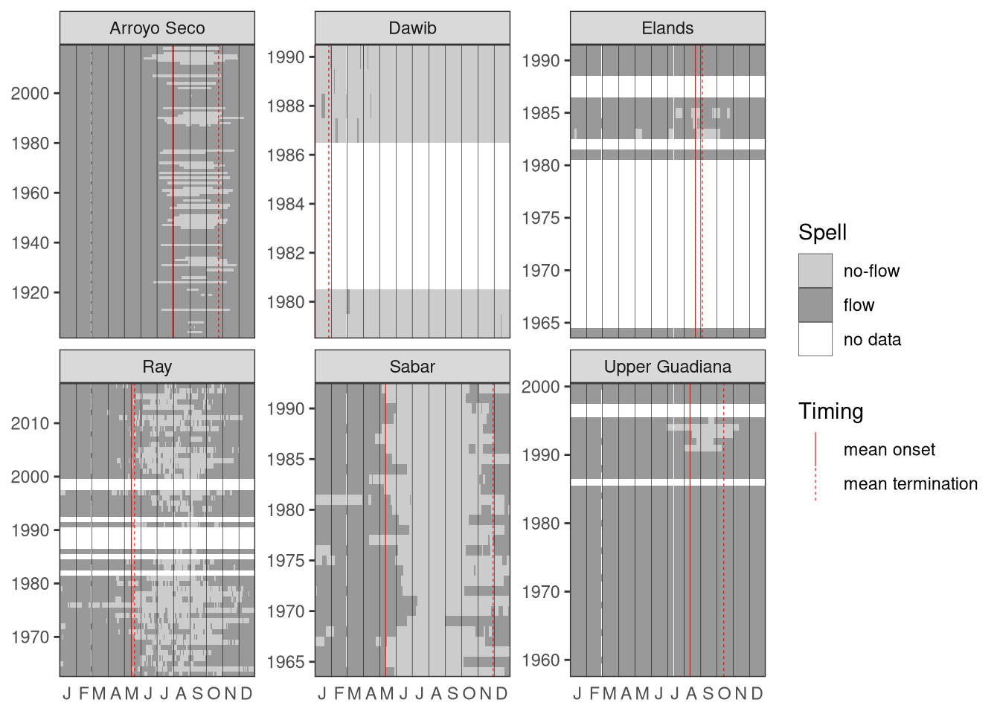

In this example we use river flow data from the rivers of the International Data Set in the package hydroDrought that are classified as intermittent or ephemeral. The dataset becomes accessible by loading the hydroDrought package.
library(hydroDrought)
library(tidyverse)
rivers <- international %>%
select(river, data) A river is defined as intermittent or ephemeral if the river flow is below a threshold of 0.001m3s-1 at least for 5 days each year. Six rivers in the International Dataset fulfil the criteria: Sabar at Alfartanejo and Upper Guadiana at site 4008 in Spain, Dawib (Namibia), Elands at Elands River Drift (South Africa), Ray at Grednon underwood (UK) and Arroyo Seco at Soledad (US). If the first and/or last year in the time series contain missing values, these years are removed. Only years without missing values are included in the analysis.
intermittent <- rivers %>%
mutate(
is.intermittent = map_lgl(data, ~is_intermittent(.x$time, .x$discharge))
) %>%
filter(is.intermittent) %>%
mutate(
clipped = map(data, remove_incomplete_first_last),
) The following indices are calculated and included in the table below:
frac nf years: the proportion of no-flow years, defined as the number of years with no-flow occurrence divided by the total number of years in the time series;
MAN: the mean annual number of no-flow days;
CVAN: the coefficient of variation of no-flow days
no flow days: the number of days without flow for each year of the time series. This is list of integer values corresponing to the number of years in the record.
MAMD: the mean annual maximum no-flow spell duration;
onset: arithmetic mean of the date the first annual no-flow spell starts (using circular statistics).
sd onset: standard deviation of the date the first annual no-flow spell starts (using circular statistics).
term.: arithmetic mean of the date the first no-flow spell ends (using circular statistics)
f <- list("frac nf years" = no_flow_years ,
"MAN" = MAN, "CVAN" = CVAN, "no flow days" = FAN,
"MAMD" = MAMD,
"onset" = tau0, "sd onset" = tau0r, "term." = tauE)
metrics <- intermittent %>%
transmute(
river,
metrics = map(clipped, ~map(f, exec, time = .x$time, flow = .x$discharge))
) %>%
unnest_wider(metrics)Table 5.xx. No-flow indices for rivers Sabar at Alfartanejo, Upper Guadiana at site 4008 in Spain, Dawib (Namibia), Elands at Elands River Drift (South Africa), Ray at Grednon underwood (UK) and Arroyo Seco at Soledad (US)
## # A tibble: 6 x 9
## river `frac nf years` MAN CVAN `no flow days` MAMD onset `sd onset` term.
## <chr> <dbl> <dbl> <dbl> <list> <dbl> <date> <dbl> <date>
## 1 Sabar 1 185. 0.239 <int [29]> 168. -05-12 60.0 -11-29
## 2 Upper Guadiana 0.116 8.12 3.26 <int [40]> 8.12 -08-12 25.8 -10-14
## 3 Dawib 1 361. 0.00830 <int [6]> 298. -01-01 0 -01-27
## 4 Elands 0.214 14.4 1.83 <int [9]> 7.89 -08-22 83.6 -09-04
## 5 Ray 0.945 98.2 0.576 <int [46]> 40.2 -05-14 52.8 -05-20
## 6 Arroyo Seco 0.441 39.0 1.33 <int [118]> 38.3 -07-30 24.7 -10-24spells <- intermittent %>%
mutate(
spells = map(clipped, ~ires_metric(.x$time, .x$discharge, na = "drop_year"))
) %>%
select(river, spells) %>%
unnest(spells) %>%
mutate(
year = water_year(time),
day = monthDay(time)
)
onoff <- metrics %>%
select(river, "mean onset" = onset, "mean termination" = `term.`) %>%
pivot_longer(-river, names_to = "Timing")
ggplot(spells, aes(monthDay(time), year, fill = state)) +
geom_tile() +
geom_vline(data = onoff, aes(xintercept = value, linetype = Timing),
col = "red", size = 0.2) +
scale_x_month(expand = expansion(), nletters = 1) +
scale_y_continuous(expand = expansion(), breaks = breaks_integer()) +
scale_fill_manual("Spell", values = c("no-flow" = "grey80", "flow" = "grey60",
"no-data" = "NA"),
drop = FALSE) +
facet_wrap(vars(river), scales = "free_y") +
guides(fill = guide_legend(override.aes = list(col = 1))) +
theme_bw() +
theme(panel.grid.major = element_blank(),
panel.grid.minor.x = element_line(colour = "black", size = 0.1),
panel.grid.minor.y = element_blank(),
axis.ticks.x = element_blank(),
panel.ontop = TRUE,
panel.background = element_rect(fill = NA),
axis.title = element_blank())Figure 5.xx Streamflow permanence for rivers Sabar at Alfartanejo, Upper Guadiana at site 4008 in Spain, Dawib (Namibia), Elands at Elands River Drift (South Africa), Ray at Grednon underwood (UK) and Arroyo Seco at Soledad (US)
